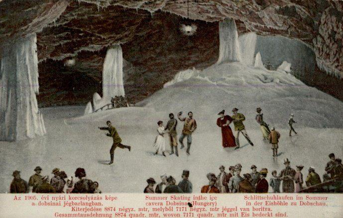

In the Slovak Paradise National Park, near the mining town of Dobšiná, is a year-round ice cave with an average temperature of 0°C.
Water seeping through the limestone ceiling comes into contact with the existing ice, which then freezes, expands, and further erodes the rock within this cave. A process that has repeated for an estimated 250,000 years.
First discovered in 1870 by the mining engineer Jenő Ruffinyi, the Dobšiná cave has had a long and busy history. In 1887, it was the first electrically lit cave in Europe. In 1890, Bulgarian Czar Ferdinand I visited. By 1905, it was a regular location for summer ice skating. But all this activity took a toll on the ice, and before long only tourist walks were allowed in the interest of preserving the ice.
Historical photo
Ice skating within the cave, 1905

Visitors can wander full circle through large caverns and ice tunnels on a suspended metal walkway. I visited at the end of summer when the stalagmites were quite small, so I would suggest visiting at the end of winter because photos online show how much larger and grander the ice features can become.